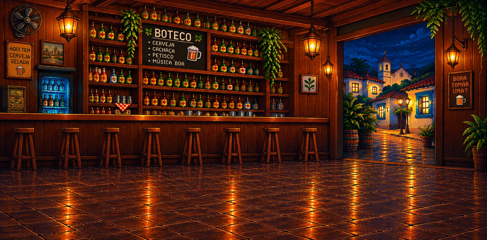
A canastra virou roguelike.
E o bar está aberto.
Monte trincas e canastras, junte Trunfos do boteco e derrube os Chefões do bar numa partida que nunca sai igual.
Chegando na Steam e na Google Play
- 171Trunfos
- 36Chefões
- 12Baralhos
Jogabilidade
Monte a mão.
Bata a meta.
Cada mesa pede uma meta de pontos. Você tem cinco Jogadas e três Descartes para chegar lá com as nove cartas da mão.
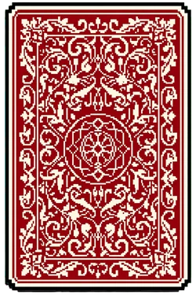
16 mãos de canastraDa Carta Solta à Sequência de 9 Naipada, a Suprema. E mais 3 mãos secretas que só aparecem depois de feitas.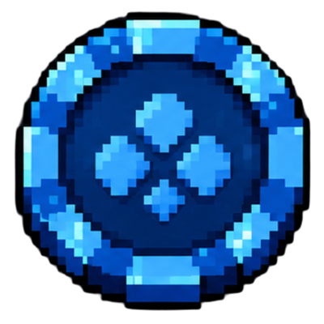
CascalhoAs fichas azuis: vêm da mão e de cada carta que pontua.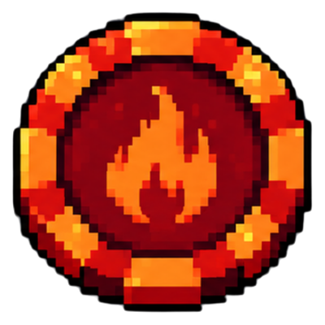
BrasaO multiplicador vermelho. Cascalho vezes Brasa dá os pontos.- 24 mesas, 8 rodadasMesa Pequena, Mesa Grande e um Chefão que troca as regras.
Canastra Limpa nv. 1
Pontos864
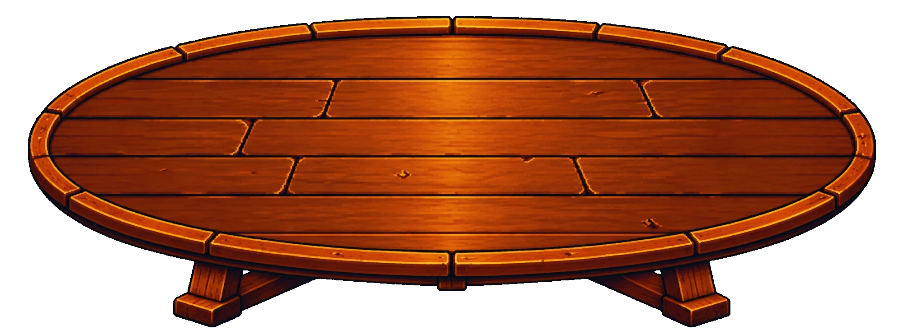
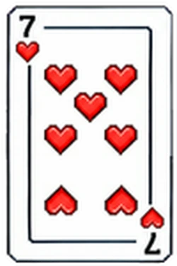
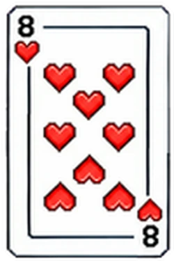
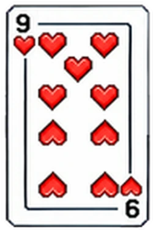
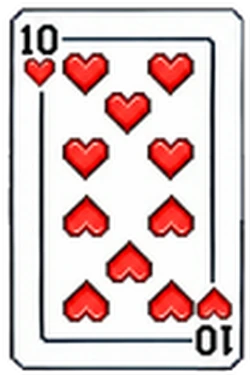
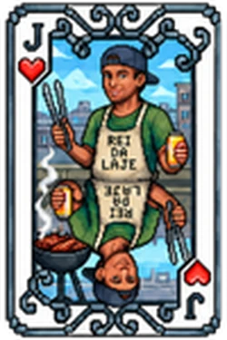
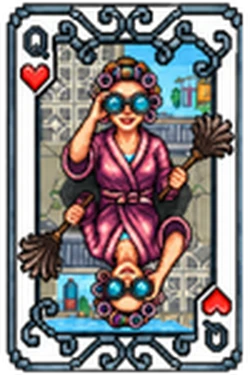
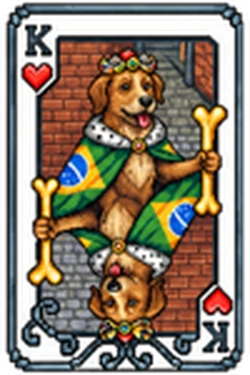
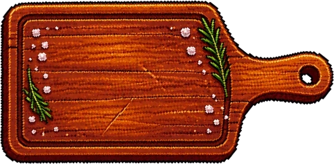
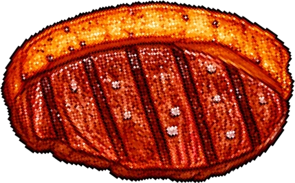
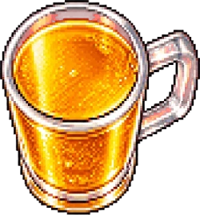
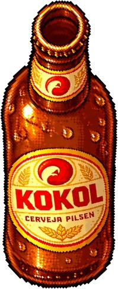
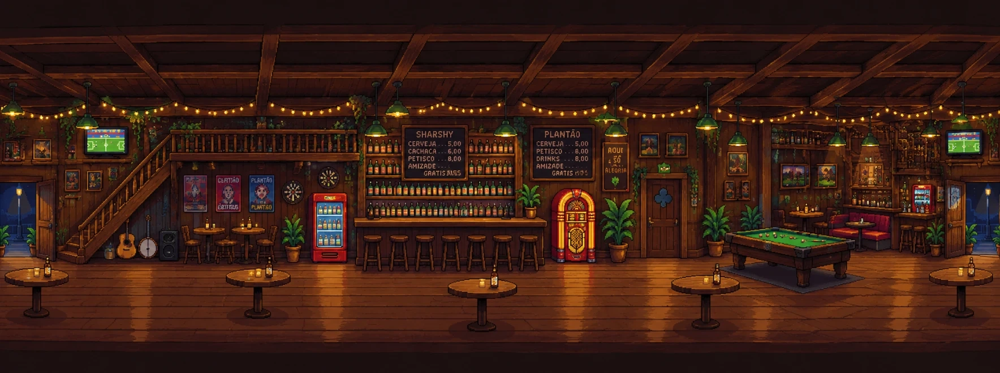
O boteco
Bem-vindo
ao boteco
- O salãoOnde a partida começa, com o Nick e o Felix por perto.
- A lojaEntre uma mesa e outra: Trunfos, pacotes e a Conta do Bar.
- A mesa do BichoAposta, escolhe o bicho e vira a carta.
Trunfos
Conheça quem joga junto
São 171 Trunfos, e cada um muda a conta de um jeito. Eles se combinam entre si, e é aí que a partida fica boa.
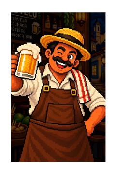
Normal
Seu Zé do Bar
+100 cascalhos em toda jogada
Chefões
Nem todo freguês
é amigo
A terceira mesa de cada rodada é um Chefão com regra própria. São 36, e os piores só aparecem lá pelo fim da noite.
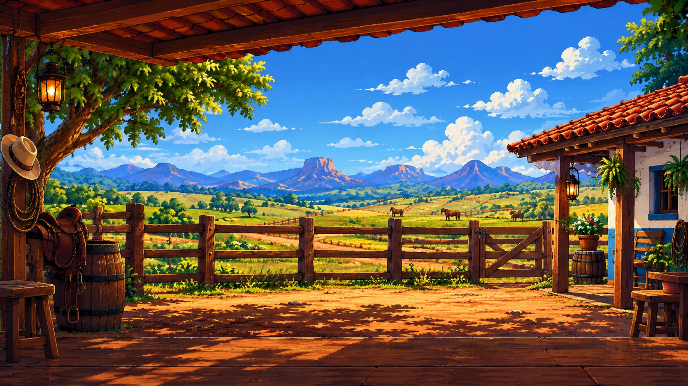
A primeira mesa vai ser posta
O Canastrium está chegando na Steam, para computador, e na Google Play, para celular Android.